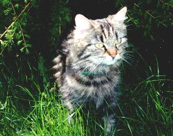
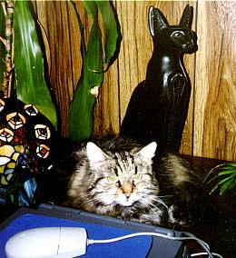

Gaiaspor
jeg har kattespor i hjertet
de følger meg over alt
mjuke poter mot bankende liv
jeg har katteøyne i øynene
gulgrønne øyne
som er med meg gjennom dagene
jeg har kattedrømmer i drømmene
urolig jagende gjennom angsten
jeg har en kattepote i hånda
med klør som hogger vonde tanker
jeg har et mørke i sinnet
men katteøyne splitter natta
jeg eier kattekjærlighet
en utrolig gave
grasiøst igjennom minnene
smyger du
til jeg kommer etter
jeg har Gaiaspor i hjertet
